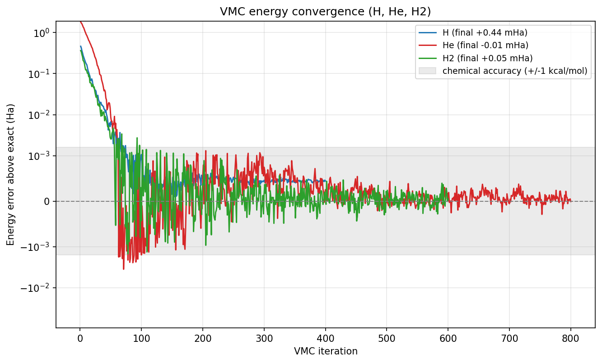
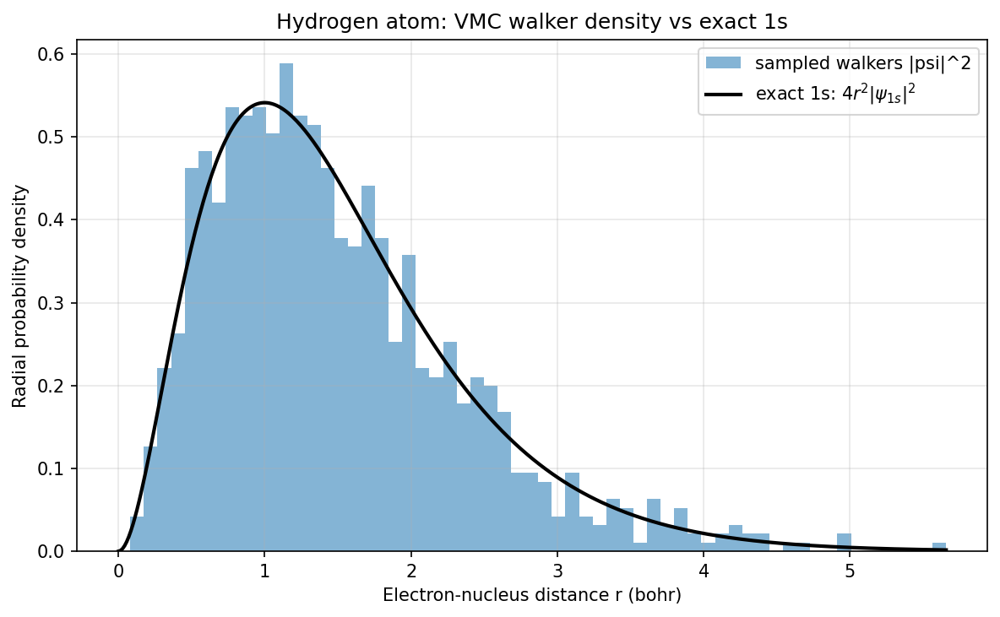

Variational Monte Carlo: H, He and H2 ground states¶
| Metadata | Value |
|---|---|
| Level | Advanced |
| Runtime | ~2 min (GPU, jit + lax.scan sampler) |
| Prerequisites | JAX, Flax NNX, variational Monte Carlo, neural wavefunctions |
| Format | Python + Jupyter |
| Memory | ~2 GB RAM |
Overview¶
This example recovers the ground-state energies of the hydrogen atom, the helium atom, and the hydrogen molecule from first principles with variational Monte Carlo (VMC), using a FermiNet neural-network wavefunction (Pfau et al. 2020, arXiv:1909.02487). VMC minimises the variational energy
of a trial wavefunction psi_theta by stochastic gradient descent on its
parameters, with the expectation taken over walkers sampled from the Born density
|psi_theta|^2. By the variational principle the energy is an upper bound on the
true ground state, so lower is always better — there is no label set to overfit,
and matching the exact reference is a faithful recovery of known physics.
These three systems have essentially exact references (H -0.5, He -2.9037
(Pekeris 1958), H2 at R=1.4 bohr -1.1745 Hartree), so the goal here is faithful
recovery to chemical accuracy (better than 1 mHa), not beating a benchmark.
The identical ansatz, sampler and optimiser scale unchanged to larger molecules
where no exact answer exists.
The example is deliberately thin — it composes opifex's committed VMC stack and changes no library internals:
FermiNetis the generalized-Slater equivariant ansatz, evaluated in the log domain one walker at a time andvmap-ed over the batch.MetropolisHastingsSamplerdraws walkers from|psi|^2with the FermiNet harmonic-mean proposal, fusing all MCMC sweeps into onejax.lax.scan.VMCDriverruns the energy-minimisation loop: each jitted step samples walkers, evaluates the per-walker local energy (forward-Laplacian kinetic term), and applies a SPRING natural-gradient update.VMCConfigselects the SPRING optimiser, the batch size and the iteration budget.
What You'll Learn¶
- Build a
FermiNetwavefunction for an atom or molecule - Sample the Born density
|psi|^2with the harmonic-mean Metropolis sampler - Minimise the variational energy with the SPRING natural-gradient optimiser
- Recover H, He and H2 ground-state energies to chemical accuracy
- Read the energy-convergence curve and the sampled walker density
Background: variational Monte Carlo¶
VMC turns the Schrödinger eigenvalue problem into an optimisation. For any trial
wavefunction the local energy E_loc(r) = (H psi)(r) / psi(r) is a function of a
single electron configuration r, and its average over the Born density
|psi|^2 equals the variational energy E[theta]. The variational principle
guarantees E[theta] >= E_0, the exact ground state, with equality only at the
true ground-state wavefunction. So minimising E[theta] drives psi_theta
toward the ground state, and the recovered energy is always an upper bound.
opifex evaluates the local energy with a native forward-Laplacian kinetic
term — the Hessian diagonal of log|psi| obtained from stacked JVPs in O(1)
forward passes (the LapNet speed-up) rather than O(n) reverse-then-forward
passes. The gradient signal is the FermiNet score-function estimator
grad E = 2 < (E_loc - <E_loc>) grad log|psi| >, preconditioned by the SPRING
natural gradient. See Variational Monte Carlo
for the backbone → local-energy → optimiser design.
Configuration¶
Each system is described by its nuclear geometry (in bohr), charges, spin
partition (n_up, n_down), exact reference, and a per-system optimisation budget.
The ansatz, sampler and optimiser hyper-parameters are shared across all three
systems and follow the FermiNet small-atom recipe: a two-layer equivariant
backbone (one-electron widths (32, 32), two-electron widths (16, 16)) with
four generalized-Slater determinants, the SPRING optimiser, and a 1024-walker
harmonic-mean Metropolis sampler with 10 sweeps per step.
from dataclasses import dataclass
import jax
import jax.numpy as jnp
# float64 + matmul precision "high": VMC energies are validated to ~1 mHa, well
# below the TF32 fallback error on GPU.
jax.config.update("jax_enable_x64", True)
jax.config.update("jax_default_matmul_precision", "high")
@dataclass(frozen=True, slots=True, kw_only=True)
class System:
name: str
atoms: jax.Array
charges: jax.Array
nspins: tuple[int, int]
exact_energy: float
iterations: int
learning_rate: float
seed: int
SYSTEMS = (
System(name="H", atoms=jnp.array([[0.0, 0.0, 0.0]]), charges=jnp.array([1.0]),
nspins=(1, 0), exact_energy=-0.5, iterations=400, learning_rate=0.05, seed=0),
System(name="He", atoms=jnp.array([[0.0, 0.0, 0.0]]), charges=jnp.array([2.0]),
nspins=(1, 1), exact_energy=-2.9037, iterations=800, learning_rate=0.04, seed=2),
System(name="H2", atoms=jnp.array([[0.0, 0.0, 0.0], [0.0, 0.0, 1.4]]),
charges=jnp.array([1.0, 1.0]), nspins=(1, 1), exact_energy=-1.1745,
iterations=600, learning_rate=0.05, seed=1),
)
Building one VMC run¶
A VMC run for any system is the same three-object composition: a FermiNet
ansatz, a MetropolisHastingsSampler, and a VMCDriver carrying the VMCConfig.
The ansatz exposes a single-walker positions -> (sign, log|psi|) call (log
domain for stability); the driver vmaps it over the walker batch for sampling
and the local energy, and grads it for the score-function gradient and the
per-sample Jacobian the SPRING solve needs. Spin (n_up, n_down) is a static
attribute, so the whole step is one jit-compiled GPU kernel.
from flax import nnx
from opifex.neural.quantum.vmc import (
FermiNet, MetropolisHastingsSampler, VMCConfig, VMCDriver,
)
def build_driver(system):
ansatz = FermiNet(
nspins=system.nspins, atoms=system.atoms, charges=system.charges,
hidden_one=(32, 32), hidden_two=(16, 16),
determinants=4, full_det=True, rngs=nnx.Rngs(system.seed),
)
sampler = MetropolisHastingsSampler(atoms=system.atoms, steps=10, step_size=0.4)
config = VMCConfig(
batch_size=1024, iterations=system.iterations, optimizer="spring",
learning_rate=system.learning_rate, equilibration_steps=200,
)
return VMCDriver(ansatz=ansatz, sampler=sampler, config=config)
Training¶
VMCDriver.run equilibrates the walkers under the freshly initialised
wavefunction, then runs iterations jitted optimisation steps. Each step
- advances the walkers by 10 Metropolis-Hastings sweeps (one fused
lax.scan) so they track the current|psi_theta|^2; - evaluates the per-walker local energy with the native forward-Laplacian kinetic term, with outlier-robust median-absolute-deviation clipping; then
- forms the FermiNet score-function energy gradient, preconditions it with the SPRING natural-gradient solve (Fisher inverse in sample space + Nesterov momentum), and updates the parameters.
The reported energy is the mean local energy over the final batch with its Monte
Carlo standard error sigma / sqrt(N).
import jax
results = {}
for system in SYSTEMS:
driver = build_driver(system)
results[system.name] = driver.run(jax.random.PRNGKey(system.seed))
The SPRING natural gradient is what makes this fast: it preconditions the energy
gradient by the inverse Fisher matrix, solved in the cheap sample space (an
N x N Gram system, not a parameter-space one), and adds Nesterov momentum — so
the energy reaches chemical accuracy in a few hundred iterations rather than the
thousands a plain first-order optimiser would need.
Results¶
Recovered energies on a single GPU run of this example (float64, matmul precision
high), against the essentially-exact references. Chemical accuracy is the
conventional 1 kcal/mol ~ 1.594 mHa threshold; the variational principle bounds
every recovered energy from above, so the errors are essentially all positive
(above the true ground state) up to Monte Carlo noise.
======================================================================
VMC ground-state energies vs exact references
======================================================================
System | E_VMC (Ha) | Exact (Ha) | Error | Status
-------------------------------------------------------------------
H | -0.49956 +/- 0.00002 | -0.5000 | +0.44 mHa | chem-acc
He | -2.90369 +/- 0.00008 | -2.9037 | +0.01 mHa | chem-acc
H2 | -1.17448 +/- 0.00012 | -1.1745 | +0.02 mHa | chem-acc
-------------------------------------------------------------------
Chemical accuracy threshold: |error| < 1.594 mHa (1 kcal/mol)
| System | E_VMC (Ha) | Exact (Ha) | Error | Reference |
|---|---|---|---|---|
| H | -0.49956 ± 0.00002 | -0.5000 | +0.44 mHa | exact -1/2 |
| He | -2.90369 ± 0.00008 | -2.9037 | +0.01 mHa | Pekeris 1958 (essentially exact) |
| H2 | -1.17448 ± 0.00012 | -1.1745 | +0.02 mHa | exact Born-Oppenheimer @ R=1.4 bohr |
All three land inside chemical accuracy — He and H2 to a few hundredths of a milli-Hartree, H to under half a milli-Hartree. The whole run (three systems, 400/800/600 iterations) takes about 82 seconds of compute on a single GPU plus jit compilation. These are recoveries of known physics, not a benchmark score: because the variational principle bounds every energy from above, recovering the exact references to under 1 mHa is direct evidence the ansatz, sampler and optimiser are correct and accurate — and the same stack scales, unchanged, to molecules where no exact answer exists.
Energy convergence¶

The error above the exact reference is plotted on a symmetric-log axis so both the early macroscopic descent and the final sub-milli-Hartree convergence are visible. All three systems fall from ~1 Hartree into the shaded chemical-accuracy band (±1 kcal/mol) within a few hundred SPRING iterations and then fluctuate around zero at the Monte Carlo noise floor.
Hydrogen walker density¶

A direct check that the Metropolis sampler draws from the correct Born density:
the converged hydrogen walkers' radial distribution matches the exact hydrogen 1s
radial density 4 r^2 |psi_1s|^2 (with psi_1s = exp(-r) / sqrt(pi)), peaking at
the Bohr radius r = 1.
Running the example¶
The run is self-contained — no dataset download. It enables float64 and pins the
matmul precision to high so the GPU float32 (TF32) fallback does not pollute the
milli-Hartree energies.
Key takeaways¶
- A VMC ground-state calculation is a thin composition of the opifex VMC
stack:
FermiNetansatz →MetropolisHastingsSampler→VMCDriverwith the SPRING optimiser → energy table and plots. - The variational principle makes this honest — every recovered energy is an upper bound on the exact ground state, so matching the references to <1 mHa is a faithful recovery of known physics, not a fit to labels.
- The forward-Laplacian local energy gives the kinetic term in
O(1)forward passes, and the whole optimisation step (samplerlax.scan+ local energy + SPRING update) is onejit-compiled GPU kernel. - SPRING natural gradient converges fast — preconditioning by the inverse Fisher matrix in sample space plus Nesterov momentum reaches chemical accuracy in a few hundred iterations rather than thousands.
- The same stack scales unchanged to larger molecules; for bigger systems, swap in a PsiFormer attention backbone, a MALA sampler, or larger walker counts.
See also¶
- Variational Monte Carlo — the FermiNet ansatz, forward-Laplacian kinetic energy, MinSR/SPRING optimisers, and how to extend the stack.
- Pfau, Spencer, Matthews & Foulkes 2020, Ab initio solution of the many-electron Schrödinger equation with deep neural networks, Phys. Rev. Research 2, 033429 (arXiv:1909.02487) — FermiNet.
- Goldshlager, Abrahamsen & Lin 2024, A Kaczmarz-inspired approach to accelerate the optimization of neural network wavefunctions (arXiv:2401.10190) — SPRING.
- Pekeris 1958, Ground State of Two-Electron Atoms, Phys. Rev. 112, 1649 — the essentially-exact helium reference.